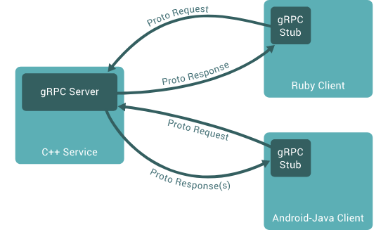
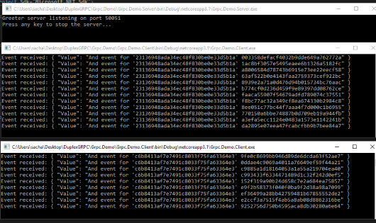

So if you have been around a while you will have undoubtedly come across the need to perform some sort of remote procedure call. There are many frameworks that allow this, WebApi, WCF, just about any REST Api you can think of, Service Stack etc etc
This is all fairly standard stuff we call a remote systems method with some parameters (or not) and get a response (or not)
Those of you that have also used things like WCF will recall that WCF also supported Duplex channels, where the server side code was capable of calling clients back on a callback channel. This is quite useful for things like notifications/price updates things like that.
Now WCF is old and kind of tied to Windows really, REST is REST no arguing with that. However over time it is natural for new frameworks to appear, and the people at Google came out with one called gRPC which allows you to define your contracts in their well known protobuf syntax, and then using Go/C++/Java/Python/C# to build working services against the proto files.
While there is a whole slew of excellent tutorials on gRPC , there are not many on Duplex comms. This article will try and demonstrate duplex gRPC , and also explain some core gRPC concepts along the way
The code for this article can be found here : https://github.com/sachabarber/DuplexGRPC
This section is borrowed from the introductory guide https://grpc.io/docs/what-is-grpc/introduction/
In gRPC, a client application can directly call a method on a server application on a different machine as if it were a local object, making it easier for you to create distributed applications and services. As in many RPC systems, gRPC is based around the idea of defining a service, specifying the methods that can be called remotely with their parameters and return types. On the server side, the server implements this interface and runs a gRPC server to handle client calls. On the client side, the client has a stub (referred to as just a client in some languages) that provides the same methods as the server.

gRPC clients and servers can run and talk to each other in a variety of environments - from servers inside Google to your own desktop - and can be written in any of gRPC’s supported languages. So, for example, you can easily create a gRPC server in Java with clients in Go, Python, or Ruby. In addition, the latest Google APIs will have gRPC versions of their interfaces, letting you easily build Google functionality into your applications.
Working with Protocol Buffers
By default, gRPC uses Protocol Buffers, Google’s mature open source mechanism
for serializing structured data (although it can be used with other data formats
such as JSON). Here’s a quick intro to how it works. If you’re already familiar
with protocol buffers, feel free to skip ahead to the next section.
The
first step when working with protocol buffers is to define the structure for the
data you want to serialize in a proto file: this is an ordinary text file with a
.proto extension. Protocol buffer data is structured as messages, where each
message is a small logical record of information containing a series of
name-value pairs called fields. Here’s a simple example:
message Person {
string name = 1;
int32 id = 2;
bool has_ponycopter = 3;
}
Then, once you’ve specified your data structures, you use the protocol buffer compiler protoc to generate data access classes in your preferred language(s) from your proto definition. These provide simple accessors for each field, like name() and set_name(), as well as methods to serialize/parse the whole structure to/from raw bytes. So, for instance, if your chosen language is C++, running the compiler on the example above will generate a class called Person. You can then use this class in your application to populate, serialize, and retrieve Person protocol buffer messages. You define gRPC services in ordinary proto files, with RPC method parameters and return types specified as protocol buffer messages:
// The greeter service definition.
service Greeter {
// Sends a greeting
rpc SayHello (HelloRequest) returns (HelloReply) {}
}
// The request message containing the user's name.
message HelloRequest {
string name = 1;
}
// The response message containing the greetings
message HelloReply {
string message = 1;
}
gRPC uses protoc with a special gRPC plugin to generate code from your proto file: you get generated gRPC client and server code, as well as the regular protocol buffer code for populating, serializing, and retrieving your message types. You’ll see an example of this below.
To learn more about protocol buffers, including how to install protoc with the gRPC plugin in your chosen language, see the protocol buffers documentation.
You can learn more here
I have put together a small demo project, which you can use to follow along with the steps below
The Contracts
As stateted above you need to start with the Proto file defintion, so for a C# project that also means you need the following Nugets
With these 3 nugets, we can set about creating a small service
syntax = "proto3";
option java_multiple_files = true;
option java_package = "io.grpc.examples.demo";
option java_outer_classname = "DemoProto";
option objc_class_prefix = "DMO";
import "google/protobuf/empty.proto";
package demos;
service PubSub {
rpc GetAnEvent(google.protobuf.Empty) returns (Event) {}
rpc Subscribe(Subscription) returns (stream Event) {}
rpc Unsubscribe(Subscription) returns (Unsubscription) {}
}
message Event
{
string Value = 1;
}
message Subscription
{
string Id = 1;
}
message Unsubscription
{
string Id = 1;
}
This small proto file contains a service with 3 methods and several data types that may be used in the services. The eagle eyed amongst you will see the work stream in there as a return type. This is the syntax we use when we want to allow server side streaming. We will see how this effects the proxy generation later. For now I would urge you all to read this page on gRPC : https://grpc.io/docs/what-is-grpc/core-concepts/
The demo solution actually contains the following 3 projects
We will dive into all of these below
To do a simple request response is fairly simple, we can just do this in the client/server using the automagically generated proxies that the Grpc.Tools compilation does for us
Client code
Channel channel = new Channel("127.0.0.1:50051", ChannelCredentials.Insecure);
var client = new PubSub.PubSubClient(channel);
var reply = client.GetAnEvent(new Empty());
Console.WriteLine($"GetAnEvent : {reply}");
Server code
using System;
using System.Collections.Generic;
using System.Linq;
using System.Threading;
using System.Threading.Tasks;
using System.Threading.Tasks.Dataflow;
using Demos;
using Google.Protobuf.WellKnownTypes;
using Grpc.Core;
namespace Grpc.Demo.Server
{
public class PubSubImpl : PubSub.PubSubBase
{
public override Task<Event> GetAnEvent(Empty request, ServerCallContext context)
{
return Task.FromResult(new Event { Value = DateTime.Now.ToLongTimeString() });
}
}
class Program
{
const int Port = 50051;
public static void Main(string[] args)
{
//var subManager = new SubscriptionManager();
var service = new PubSubImpl();
Core.Server server = new Core.Server
{
Services = { Demos.PubSub.BindService(service) },
Ports = { new ServerPort("localhost", Port, ServerCredentials.Insecure) }
};
server.Start();
Console.ReadKey();
server.ShutdownAsync().Wait();
}
}
}
This is fairly simple and easy to understand, the Grpc.Tools compilation does its job and creates us the proxies/base classes we need, then its simply a question of hosting it server side, and calling it from client side, simples.
However things start to get a bt interesting when you want to do Duplex (server sent messages) back over gRPC. As I said in the introduction there are plenty of articles on gPRC, but not that many that fit the bill on duplex stuff. The next section will talk about that.
Now if you examine the documentation for gRPC where it says this
Server streaming RPCs where the client sends a request to the server and gets a stream to read a sequence of messages back. The client reads from the returned stream until there are no more messages. gRPC guarantees message ordering within an individual RPC call.
With this proto definition
rpc ListFeatures(Rectangle) returns (stream Feature) {}
message Point {
int32 latitude = 1;
int32 longitude = 2;
}
message Rectangle {
Point lo = 1;
Point hi = 2;
}
message Feature {
string name = 1;
Point location = 2;
}
You will see this example guidance code
public override async Task ListFeatures(Rectangle request, IServerStreamWriter<Feature> responseStream, ServerCallContext context)
{
var responses = features.FindAll( (feature) => feature.Exists() && request.Contains(feature.Location) );
foreach (var response in responses)
{
await responseStream.WriteAsync(response);
}
}
Where you can see that we write the responseStream from the context of the
ListFeatures method. This seems all well and good, but if you have
ever worked on a serious service where you need to send stuff back from the
server to the client at some later point, chances are you WILL not be in the
context of the original calling method. You will in fact be many many
classes/logic paths away from this original method you called. Even Microsofts
official Duplex WCF -> gRPC guide make use of this method context to send
results back to the client
https://docs.microsoft.com/en-us/dotnet/architecture/grpc-for-wcf-developers/migrate-duplex-services
Where the Microsoft guidance shows this
public override async Task Subscribe(SubscribeRequest request, IServerStreamWriter<StockTickerUpdate> responseStream, ServerCallContext context)
{
var subscriber = _subscriberFactory.GetSubscriber(request.Symbols.ToArray());
subscriber.Update += async (sender, args) =>
await WriteUpdateAsync(responseStream, args.Symbol, args.Price);
await AwaitCancellation(context.CancellationToken);
}
This example makes use of events and the like to do it which to my mind is also a sub-optimal solution. What I want is the ability to just add something to some buffer and then the streaming grpc method would just pick this up and send it back to the client
I have achieved this, and this is how I did it.
Step 1 : The subsciption
We need a subscription object for the client to send
using Demos;
namespace Grpc.Demo.Server
{
public class SubscriptionEvent
{
public Event Event { get; set; }
public string SubscriptionId { get; set; }
}
}
Step 2 : The client needs to send the subscription and handle the subscription callback
For me this meant creating a small class as follows
public class Subscriber
{
private static Demos.PubSub.PubSubClient _pubSubClient;
private Subscription _subscription;
public Subscriber(Demos.PubSub.PubSubClient pubSubClient)
{
_pubSubClient = pubSubClient;
}
public async Task Subscribe(string subscriptionId)
{
_subscription = new Subscription() { Id = subscriptionId };
Console.WriteLine($">> SubscriptionId : {subscriptionId}");
using (var call = _pubSubClient.Subscribe(_subscription))
{
//Receive
var responseReaderTask = Task.Run(async () =>
{
while (await call.ResponseStream.MoveNext())
{
Console.WriteLine("Event received: " + call.ResponseStream.Current);
}
});
await responseReaderTask;
}
}
public void Unsubscribe()
{
_pubSubClient.Unsubscribe(_subscription);
}
}
Which I could then use in the client code as follows
class Program
{
public static void Main(string[] args)
{
Channel channel = new Channel("127.0.0.1:50051", ChannelCredentials.Insecure);
var client = new PubSub.PubSubClient(channel);
var subscriber = new Subscriber(client);
Task.Run(async () =>
{
await subscriber.Subscribe(Guid.NewGuid().ToString("N"));
}).ConfigureAwait(false).GetAwaiter();
Console.WriteLine("Hit key to unsubscribe");
Console.ReadLine();
subscriber.Unsubscribe();
Console.WriteLine("Unsubscribed...");
Console.WriteLine("Hit key to exit...");
Console.ReadLine();
}
}
So that is all for the client side, so now on to the server side
Step 3 : The server side
So now we have a subscription from the client how should the server deal with it. Remember for me what I wanted was the ability to push data into some buffer and have that data sent back to the client. I wanted to able to do this from anywhere and any thread.
So how can one achieve this? Well we can make use of the DataFlow API
specifically the BufferBlock<T> class, which provides a buffer for
storing data for a Dataflow. By using this class, we are able to spawn a thread
to send data to the client. The thread is really just to show that we can force
the sending of data from the server to the client outside the scope of the
original gRPC call and in a new thread of your choice.
OK so that is how I do it here is the relevant server side code
using System;
using System.Collections.Generic;
using System.Linq;
using System.Threading;
using System.Threading.Tasks;
using System.Threading.Tasks.Dataflow;
using Demos;
using Google.Protobuf.WellKnownTypes;
using Grpc.Core;
namespace Grpc.Demo.Server
{
public class PubSubImpl : PubSub.PubSubBase
{
private readonly BufferBlock<SubscriptionEvent> _buffer = new BufferBlock<SubscriptionEvent>();
public PubSubImpl()
{
SubscriberWritersMap = new Dictionary<string, IServerStreamWriter<Event>>();
}
public override async Task Subscribe(Subscription subscription, IServerStreamWriter<Event> responseStream, ServerCallContext context)
{
//Dict to hold a streamWriter for each subscriber.
SubscriberWritersMap[subscription.Id] = responseStream;
while (SubscriberWritersMap.Count > 0)
{
//Wait on BufferBlock from MS Dataflow package.
var subscriptionEvent = await _buffer.ReceiveAsync();
if (SubscriberWritersMap.ContainsKey(subscriptionEvent.SubscriptionId))
{
await SubscriberWritersMap[subscriptionEvent.SubscriptionId].WriteAsync(subscriptionEvent.Event);
}
}
}
public override Task<Unsubscription> Unsubscribe(Subscription request, ServerCallContext context)
{
SubscriberWritersMap.Remove(request.Id);
return Task.FromResult(new Unsubscription() { Id = request.Id });
}
public void Publish(SubscriptionEvent subscriptionEvent)
{
_buffer.Post(subscriptionEvent);
}
public Dictionary<string, IServerStreamWriter<Event>> SubscriberWritersMap { get; private set; }
}
class Program
{
const int Port = 50051;
public static void Main(string[] args)
{
//var subManager = new SubscriptionManager();
var service = new PubSubImpl();
Core.Server server = new Core.Server
{
Services = { Demos.PubSub.BindService(service) },
Ports = { new ServerPort("localhost", Port, ServerCredentials.Insecure) }
};
server.Start();
bool shouldRun = true;
Random rand = new Random(1000);
//Create a new thread here to simulate random pushes back to the clients
//this will randomly pick a subscriber to push data to
Thread t = new Thread(() =>
{
while (shouldRun)
{
if (service.SubscriberWritersMap.Any())
{
var indexedKeys = service.SubscriberWritersMap.Select((kvp, idx) => new
{
Idx = idx,
Key = kvp.Key
});
var subscriptionIdx = rand.Next(service.SubscriberWritersMap.Count);
var randomSubscriptionId = indexedKeys.Single(x => x.Idx == subscriptionIdx).Key;
service.Publish(new SubscriptionEvent()
{
Event = new Event()
{Value = $"And event for '{randomSubscriptionId}' {Guid.NewGuid().ToString("N")}"},
SubscriptionId = randomSubscriptionId
});
}
Thread.Sleep(2000);
}
});
t.Start();
Console.WriteLine("Server listening on port " + Port);
Console.WriteLine("Press any key to stop the server...");
Console.ReadKey();
shouldRun = false;
server.ShutdownAsync().Wait();
}
}
}
With this in place we can start a few clients, and see the server side random data back to the clients
CLICK FOR BIGGER IMAGE

gRPC is cool for sure, and fact you can use many languages is also great, and I hope this small aticle has shown you how you can wrestle back a bit of control over just how your duplex gRPC services can work more like traditonal pub/sub type of RPC (such as WCF)
{kind=link}